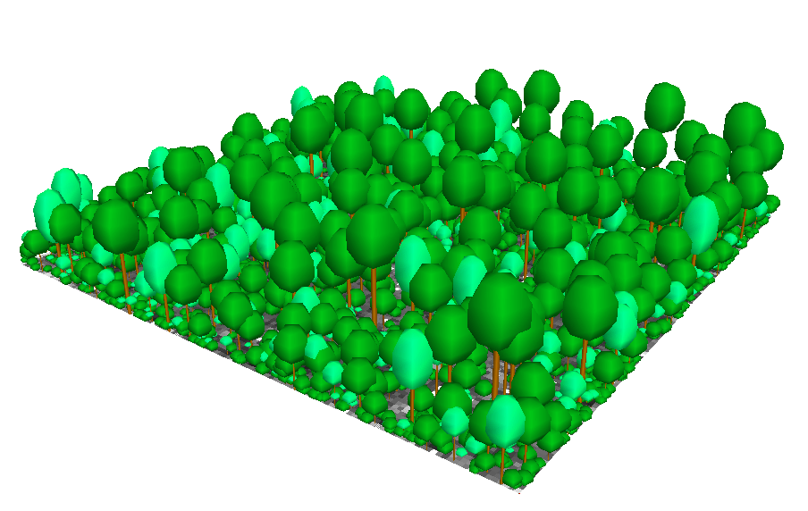
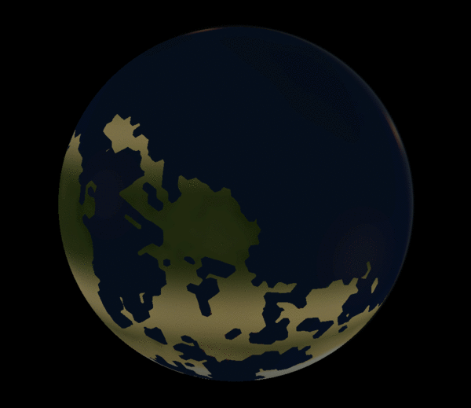
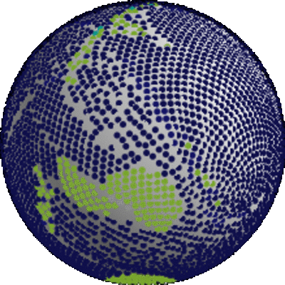

Tectonics.js

Deep Dive:
Physically Based Rendering
Overview
- Inspiration
- Use Cases
- Development
- Deep Dive
Inspiration


High School
- Science Fiction
- Interstellar Rocketry
- Speculative Biology
- World Building
- Sim Earth
- Programming
Idea: make a scientifically accurate sim earth for modern hardware
Grad School

- Ecology and Evolutionary Biology
- Computer Models
Idea: stop thinking about it and just do it

After Grad School
Tectonics.js
Deep Dive:
How do we quickly estimate average temperature on a planet?


Requirements:
- Any location
- Any point in time
- Any window across time
- Any stable stellar system
- In under 10ms
Deep Dive
Overview
Orbital Mechanics
Design Considerations
- Simulates timesteps from 10ms to 10ky
- Generates multiple sample ephemerides for any body
- Runs in under 10ms
- Resilient to floating point errors ("Anti-Kraken" clause)

Thanks

Questions?